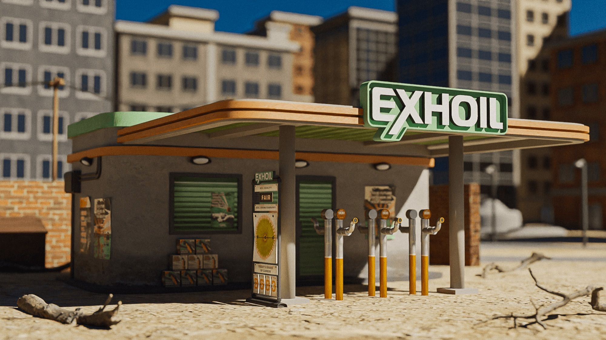
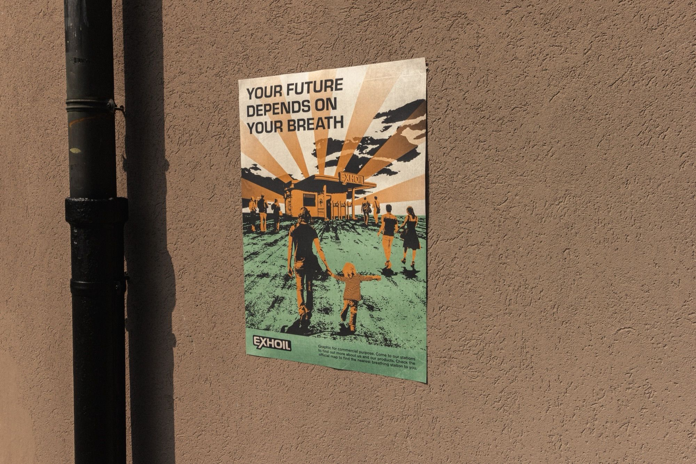
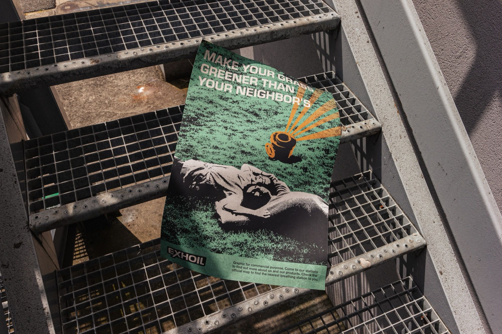
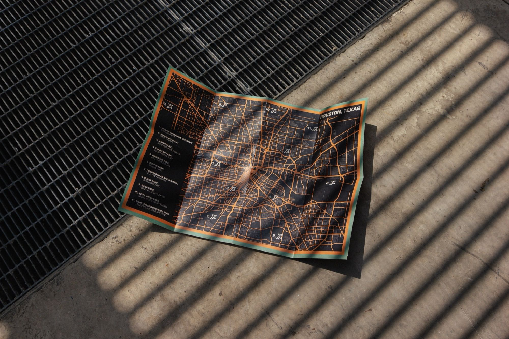
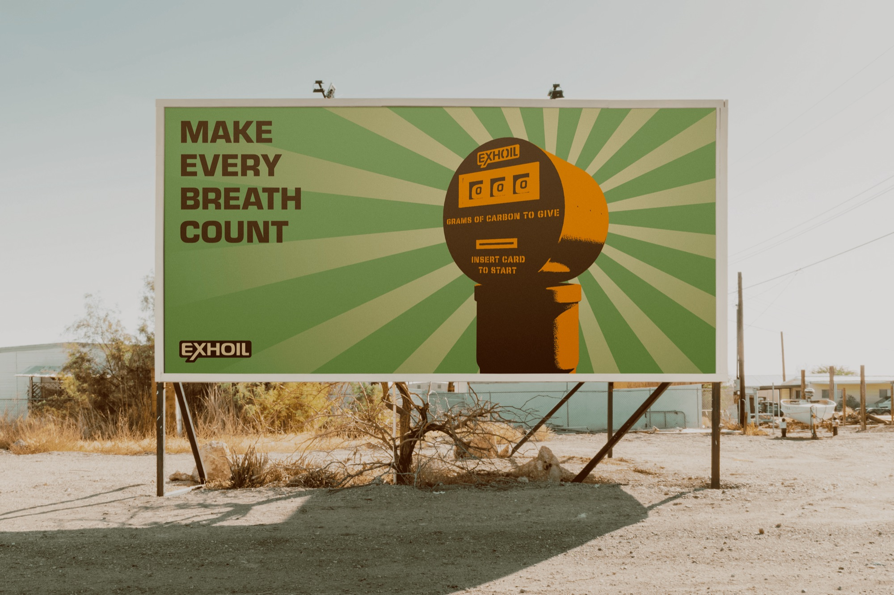
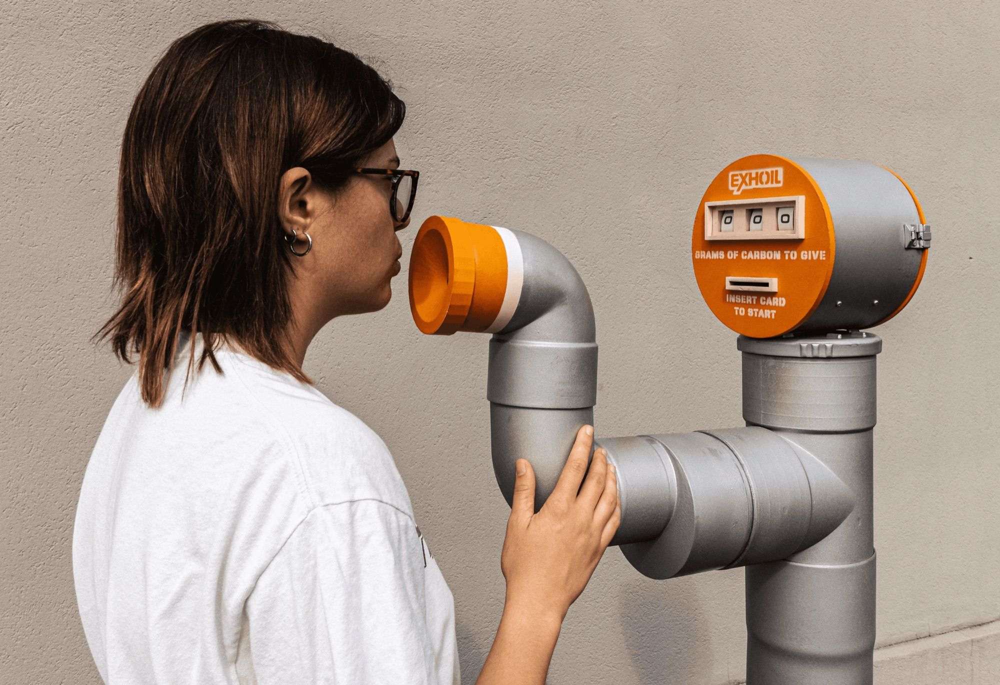
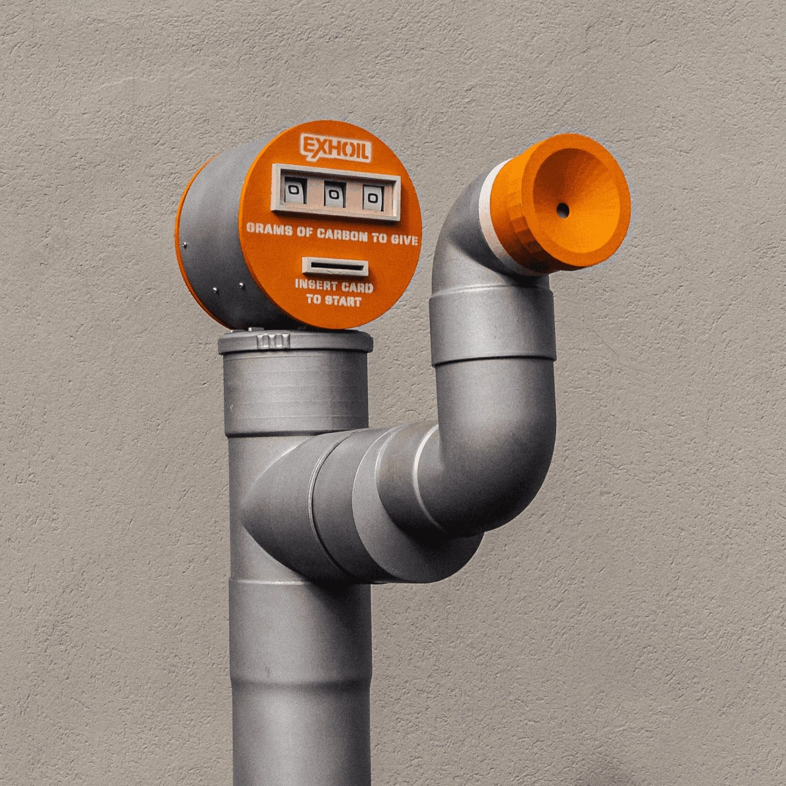
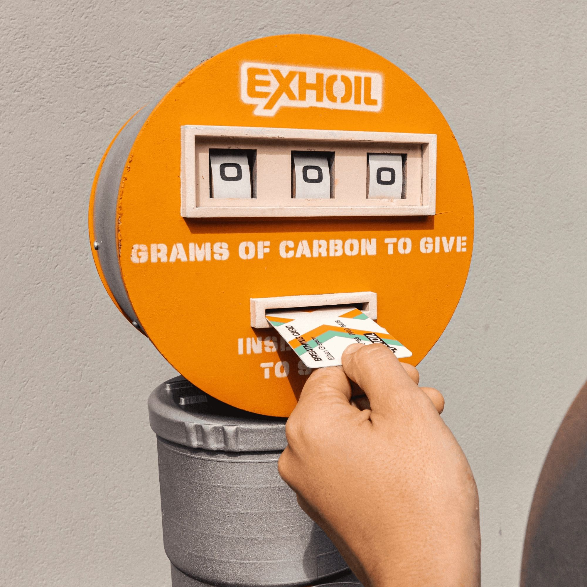
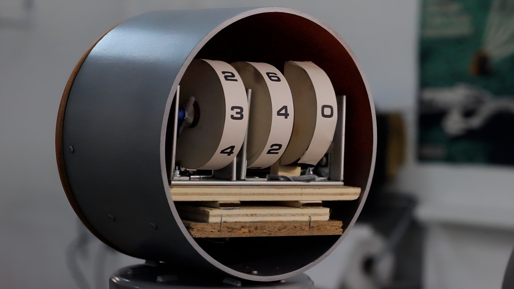
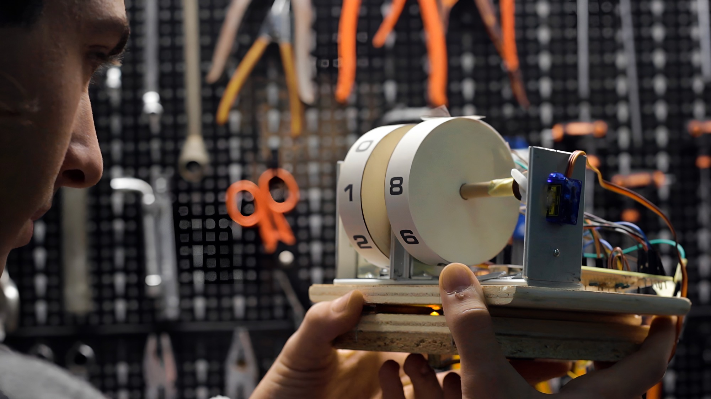

EXHOIL
A speculative brand set in 2050: old petrol stations become breathing columns, and human breath feeds carbon back into dead soil.
- Role
- Graphic designer
- My part
- Arduino prototyping and 3D modelling
- With
- Clara Di Bella, Francesco Scarfone, Matteo Semeraro, Beatrice Tronconi, Costanza Turi
- Timeline
- Sep 2022 – Jul 2023
- Tools
- Figma, Adobe Creative Cloud, Blender, Arduino
Brief
Design a brand and an experience set in the dystopian future of a natural element, to make the consequences of human activity and climate change tangible today. EXHOIL focuses on soil.
What if
What if the soil was dead, and the only way to survive was to replace plants with human breath?
Scenario
2050: the soil is dead.
Soil stores carbon and sustains life on land, yet human activity is steadily eroding this capacity. EXHOIL is a speculative project about what climate change does to the ground.
It is 2050: technology has failed, the soil is dead and cars have disappeared. EXHOIL, formerly an oil company, has turned its petrol stations into places of restoration, replacing the fuel pumps with manual breathing columns. People exhale into them, and their breath returns carbon to the starving ground. Humans have become the fuel that keeps the earth alive.

Identity & advertising
EXHOIL = Exhale + Soil.
The name joins “exhale” and “soil”: the company has moved from extracting oil to restoring the land with human breath.
The identity draws on American oil companies and petrol stations of the 1950s and 1960s. That nostalgic style carries an urgent message about the future.




Prototype
A counter you can only move with your breath.
The prototype lets visitors step into the 2050 scenario themselves: they insert their card, breathe into the column and watch the counter go down, experiencing first-hand what that future would ask of them.
The prototype has the mechanical look of a vintage petrol-pump counter and no screen. Inserting a personal card triggers a photoresistor that starts the Arduino system. Exhaling into a nozzle moves a membrane, which drives a servo-powered rotating drum and subtracts carbon units with every breath.




